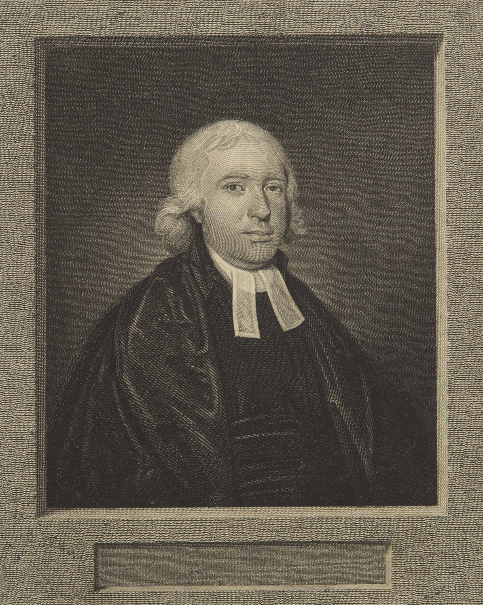

Samuel Marsden
Christianity reached New Zealand in December 1814. Marsden wanted to
establish a Christian misson in New Zealand, so he went to the Church
Missinary Society (CMS).
He asked them to help him start a Christian missions point in New
Zealand.
How was there contact with New Zealand to establish a missions station?
Marsden met Ruatara 5 years prior to when missionaries first set out on New Zealand soil.
Ruatara played a key part of bringing Christianity to New Zealand because he invited and protected missionarys to preach to the Maori. Ruatara and was the language interpreter for Marsden's sermon
Important Dates
- Born
- 25th June 1765 - Yorkshire, England
- Died
- 12th May 1838 - Australia
- Occupation
- Anglican minister
Samuel Marsden's death was caused from old age and complications of rapidly declining health following his seventh voyage to New Zealand. He was burried at St John's Church Cemetery, Parramatta
How did Samuel and Ruatara meet?
Samuel Marsden and Ruatara met on the boat 'Ann', sailing from Spithead England to Port Jackson Sydney, Australia in 1809.
Ruatara was very sick on this ship, and Marsden nursed him back to health, and this created a connection that ended up being crucial for bringing Christian Missionaries to New Zealand.
Interesting facts about Samuel Marsden
- Samuel Marsden wanted to introduce Christianity to Māori in New Zealand
- He preached the first christian church service in New Zealand on 25th December 1814.
- He delivered the speach in Rangihoua in the Bay of Islands.
- Although Marsden did not live in New Zealand but rather only visited, the missionaries would not have been able to land in NZ and then build a relationship with the people there without him.
- In 1830, Marsden helped two tribes end their arguments with the power of Christ.
- He helped establish the first Christian mission in New Zealand at Rangihoua in 1814.
- Marsden created a starting point for other missionaries to build on
- The missionaries established schooling where Maori could learn to read and write
What impact did Samuel Marsden have on New Zealand?
The overall impact that Marsden had on New Zealand, was that the country and it's people could know God personally, and it led to less inter-tribal fights, and other small wars. This means that because Marsden was determined to bring Christianity to NZ, God could work and the people could learn that fighting and killing is wrong and that they should stop.
Personal Evaluation
Personally, I think that Samuel Marsden was God's messenger to the early Maori, and that he was a key part of converting them to becoming Christians.
I think that Samuel Marsden was important for the outcome of Maori in New Zealand becoming christians, but it certainly wasn't all him. It was a mix of input from all missionaries that came to New Zealand, and then God's put it all together letting the people come to Him. It took 15-20 years for the Maori to respond and start living and believing in God after the missionaries began teaching Christianity led by Samuel Marsden in 1814. The reason that I think it took this long was because the man in charge of the CMS in NZ was Marsden, and because he didn't live in NZ but rather in Sydney, he could not be a role model for the people. There were people that worked with/ for Marsden, like Thomas Kendall and he was a hypocrite and did not live by what he was teaching.
Something that I thought was interesting that Marsden really wanted to bring Christianity to NZ, but he never lived there, or stayed for a long period of time. But rather he got other missionaries to stay there and spread the word. I also think that this is a negitive point because it meant that it would take longer to share the Gospal
References
- magnific.com Was used for the image of New Zealand, used for the home button.
- Te Ara.govt.nz Used to gather information and facts.
- nzhistory.govt.nz Used to gather information and facts.
- wikipedia.org Used to gather information, facts and images.